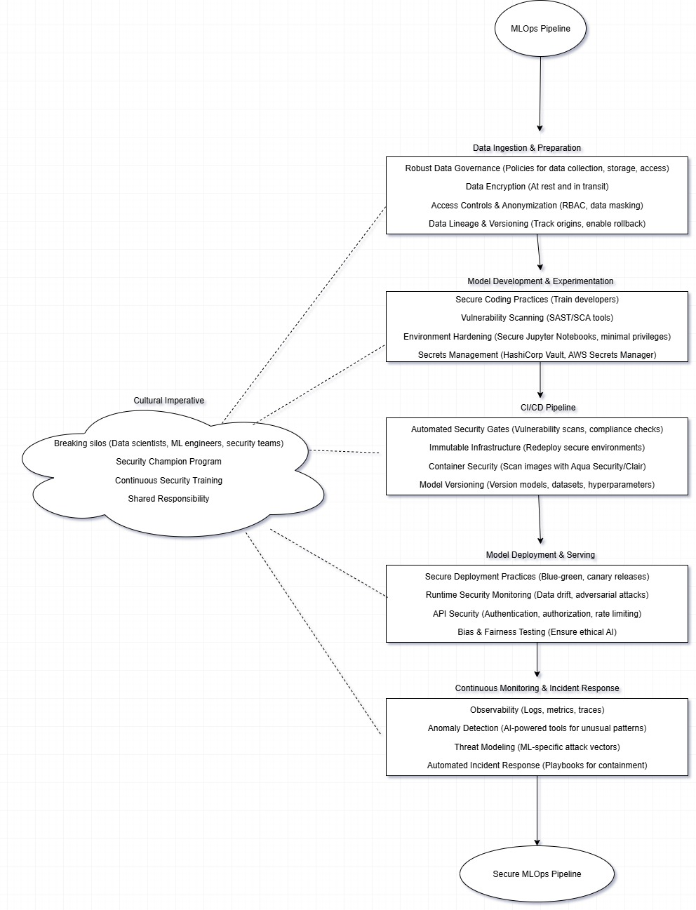

Introduction
Having spent the last decade deeply embedded in the evolving landscape of software and machine learning operations, I've witnessed firsthand the transformative power of MLOps. However, this rapid advancement in deploying and managing AI models has also brought a fresh set of security challenges. The answer, as I've consistently advocated and implemented, lies in the robust integration of DevSecOps practices directly into our MLOps pipelines. Security must be an intrinsic part of the entire machine learning lifecycle, not an afterthought.
The journey from traditional software development to the complexities of MLOps introduces unique security considerations. We're not just dealing with code vulnerabilities; we're contending with data poisoning, model extraction, adversarial attacks, data privacy, and the integrity of continuously evolving models. My 10 years of experience in architecting secure systems have reinforced a fundamental truth: a proactive, "shift-left" security approach, bolstered by automation and continuous vigilance, is paramount.
Key Concepts
Securing MLOps pipelines requires a holistic approach that integrates DevSecOps principles across the entire machine learning lifecycle. Below are the key concepts and practices, forged over a decade of practical application, to fortify MLOps pipelines:
1. Security by Design from Data to Model
The foundation of a secure MLOps pipeline begins with data. Key practices include:
- Robust Data Governance: Implement clear policies for data collection, storage, access, and usage, especially for sensitive data like PII or PHI.
- Data Encryption: Mandate encryption protocols for data at rest and in transit, whether stored in data lakes or moving through pipelines.
- Access Controls and Anonymization: Use granular, role-based access control (RBAC) and anonymization techniques to protect privacy while enabling model training.
- Data Lineage and Versioning: Track data origins and transformations using tools like DVC to ensure trustworthiness and enable rollback in case of compromise.
2. Secure Model Development and Experimentation
The experimental nature of ML development demands rigorous security practices:
- Secure Coding Practices: Train data scientists and ML engineers in secure coding to prevent vulnerabilities in model code.
- Vulnerability Scanning: Integrate Static Application Security Testing (SAST) and Software Composition Analysis (SCA) tools to detect vulnerabilities early.
- Environment Hardening: Secure development environments (e.g., Jupyter Notebooks) with minimal privileges.
- Secrets Management: Use centralized tools like HashiCorp Vault or AWS Secrets Manager to prevent hardcoded credentials.
# Example: Securely accessing secrets in Python for ML
from vault import Vault
vault = Vault()
secret = vault.get_secret('ml-model-credentials')
model.load_weights(secret['model_path'])
3. CI/CD for Models: Automation as a Security Enabler
Automation is the essence of DevSecOps and extends to models and data in MLOps:
- Automated Security Gates: Embed security checks (vulnerability scans, compliance checks) into CI/CD pipelines using tools like Jenkins or GitLab CI/CD.
- Immutable Infrastructure: Adopt immutable infrastructure for ML environments to eliminate configuration drift.
- Container Security: Scan container images with tools like Aqua Security or Clair and enforce least privilege principles.
- Model Versioning: Version models, hyperparameters, and datasets for reproducibility and audit trails, enabling quick rollbacks.
Best Practices
4. Secure Model Deployment and Serving
Deploying models to production is a critical security juncture:
- Secure Deployment Practices: Use blue-green deployments or canary releases to minimize downtime and enable rapid rollbacks.
- Runtime Security Monitoring: Continuously monitor models and infrastructure for data drift, adversarial attacks, or suspicious activity.
- API Security: Secure model APIs with strong authentication, authorization, and rate limiting.
- Bias and Fairness Testing: Test for model bias and fairness to ensure ethical AI, aligning with responsible MLOps.
5. Continuous Monitoring and Incident Response
Security is a continuous cycle of monitoring, detection, and response:
- Observability: Implement comprehensive logging and monitoring of MLOps pipeline activities for incident detection.
- Anomaly Detection: Use AI-powered tools to identify unusual patterns in model behavior or system activity.
- Threat Modeling: Conduct regular threat modeling tailored to ML-specific attack vectors like data poisoning or model evasion.
- Automated Incident Response: Develop automated playbooks for rapid containment and remediation of security threats.
The Cultural Imperative
Beyond tools and processes, fostering a security-focused culture is critical. Break down silos between data scientists, ML engineers, security teams, and operations. Implement a "security champion" program, provide continuous security training, and create shared responsibility for security.

- Robust Data Governance
- Data Encryption
- Access Controls & Anonymization
- Data Lineage & Versioning "]:::security B -->|""| note1 %% Model Development & Experimentation C[Model Development & Experimentation]:::pipeline --> D note2[" **Security Measures**
- Secure Coding Practices
- Vulnerability Scanning
- Environment Hardening
- Secrets Management "]:::security C -->|""| note2 %% CI/CD Pipeline D[CI/CD Pipeline]:::pipeline --> E note3[" **Security Measures**
- Automated Security Gates
- Immutable Infrastructure
- Container Security
- Model Versioning "]:::security D -->|""| note3 %% Model Deployment & Serving E[Model Deployment & Serving]:::pipeline --> F note4[" **Security Measures**
- Secure Deployment Practices
- Runtime Security Monitoring
- API Security
- Bias & Fairness Testing "]:::security E -->|""| note4 %% Continuous Monitoring & Incident Response F[Continuous Monitoring & Incident Response]:::pipeline --> G note5[" **Security Measures**
- Observability
- Anomaly Detection
- Threat Modeling
- Automated Incident Response "]:::security F -->|""| note5 %% Feedback Loop F -->|Continuous Improvement| B %% End Node G((End: Secure MLOps Pipeline)):::startEnd %% Cultural Imperative subgraph Cultural_Imperative [Cultural Imperative] H[" - Breaking Silos
- Security Champion Program
- Continuous Security Training
- Shared Responsibility "]:::cultural end H -.-> B H -.-> C H -.-> D H -.-> E H -.-> F
Conclusion
Architecting secure MLOps pipelines is about embedding resilience, not adding friction. It’s about building trust in AI systems, ensuring their integrity, protecting sensitive data, and delivering business value securely. The past decade has provided invaluable lessons, and the path forward is clear: DevSecOps is the blueprint for secure MLOps.